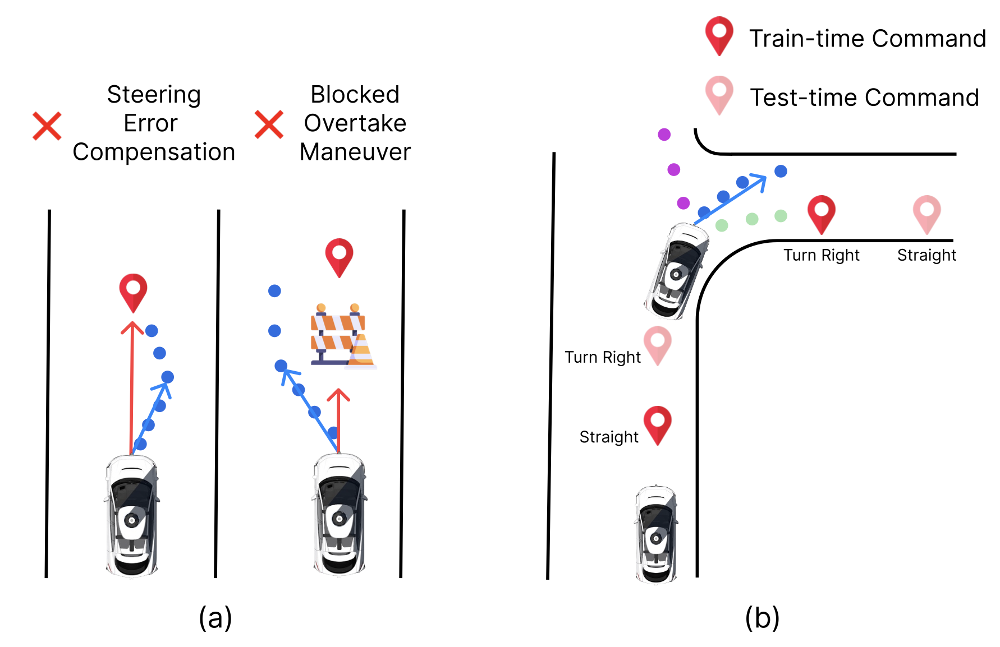

Traditional comfort tracks time spent stationary across eight models.
Overview
Closed-loop evaluation is widely regarded as a more faithful way to assess end-to-end driving models than open-loop evaluation. We find that Bench2Drive's evaluation protocol can itself misrepresent the models scored on it.
The benchmark's comfort metric mostly measures how long a vehicle stays stationary: fixed one-second segments keep accumulating while a vehicle is stopped. We propose distance-based segmentation, which scores comfort over the distance actually driven. We also identify two navigation-signal pitfalls: the default controller can replace model-predicted steering with a route-target angle, and the evaluation target point can differ substantially from the training input.
Distance-based comfort removes that relationship.
Controller steering overruling and target-point train/evaluation mismatch.
Navigation-signal pitfalls
Steering overruling can mask a model's own control behavior, while target-point sampling can give a model inputs unlike those used in training. Their effects differ across models, so the default scores are not directly comparable without checking how the harness supplies navigation signals.

Comfort results
Closed-loop results on the 220-route Bench2Drive benchmark. UniAD and VAD use the corrected navigation protocol described in the paper.
| Method | Traditional | Fixed implementation | Distance-based | Stationary time |
|---|---|---|---|---|
| UniAD | 39.28 | 79.06 | 72.93 | 45.67% |
| VAD | 45.95 | 56.84 | 37.21 | 47.64% |
| SparseDriveV2 | 7.75 | 23.50 | 50.28 | 7.08% |
| TFv6 | 19.58 | 25.97 | 29.20 | 19.83% |
| Orion | 14.76 | 70.24 | 75.98 | 23.07% |
| SimLingo | 31.71 | 36.80 | 25.86 | 32.16% |
| CaRL | 22.81 | 61.36 | 71.84 | 24.76% |
| PDM-Lite | 22.77 | 32.57 | 35.82 | 20.43% |
Higher comfort scores indicate more segments passing the comfort thresholds. Distance-based segments do not advance while the vehicle is stationary.
Citation
@misc{aghajanzadeh2026comfortably,
title = {Comfortably Stuck: Evaluation Pitfalls in Bench2Drive's Closed-Loop Protocol},
author = {Aghajanzadeh, Emad and Schwarzfischer, Thomas and Thoma, Moritz and
Fasfous, Nael and Vemparala, Manoj Rohit and Mori, Pierpaolo and
Mueller-Gritschneder, Daniel and Schlichtmann, Ulf},
year = {2026},
eprint = {2610.21741},
archivePrefix = {arXiv}
}